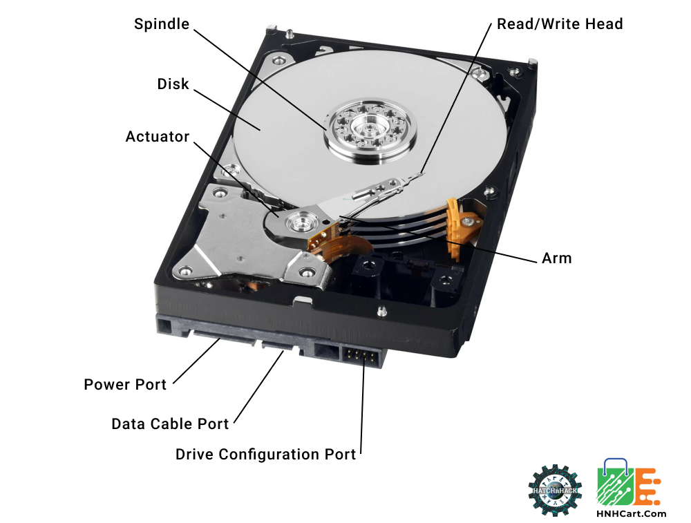
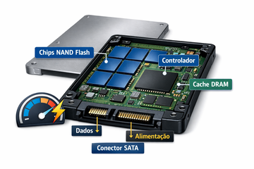
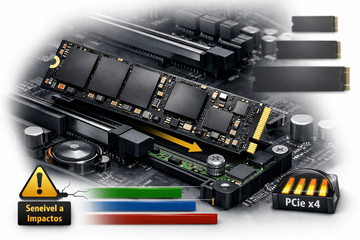

Dispositivos de Armazenamento: HD, SSD SATA e NVMe
📘 Aula 07 — Tecnologias, conexões, diagnóstico e boas práticas
1. Introdução
Os dispositivos de armazenamento são responsáveis por guardar dados de forma persistente — diferente da RAM, os dados permanecem mesmo sem energia elétrica.
São eles que armazenam:
- O sistema operacional
- Programas instalados
- Arquivos do usuário (documentos, fotos, vídeos)
Relação com as aulas anteriores: o armazenamento recebe dados da RAM (escrita) e os entrega de volta para a RAM (leitura) conforme a CPU solicita. A velocidade desse fluxo impacta diretamente o desempenho percebido do sistema.
2. HD — Hard Disk Drive

Tecnologia
O HD é um dispositivo eletromecânico: armazena dados em pratos magnéticos giratórios lidos por cabeças de leitura/escrita que se movem mecanicamente sobre os pratos.
Componentes internos principais:
- Pratos (platters): discos magnéticos onde os dados são gravados
- Cabeças de leitura/escrita: braço mecânico que posiciona sobre a trilha correta
- Motor de rotação: gira os pratos em velocidade constante
- Controlador eletrônico: gerencia operações de leitura, escrita e comunicação com a placa-mãe
Fator de forma
| Tamanho | Uso principal |
|---|---|
| 3,5" | Desktops; maior capacidade, requer alimentação +12V e +5V |
| 2,5" | Notebooks e desktops compactos; alimentação apenas +5V |
Velocidade de rotação (RPM)
| RPM | Perfil |
|---|---|
| 5400 RPM | Baixo consumo, menor velocidade; notebooks, armazenamento externo |
| 7200 RPM | Padrão desktop; melhor desempenho sequencial |
| 10000–15000 RPM | Servidores (SAS); raramente usados em desktop |
Conexões
Dados: cabo SATA III (conector L invertido na placa-mãe e no HD)
Alimentação: conector SATA Power da fonte — utiliza os trilhos +12V (motor), +5V (eletrônica) e GND
Nota: O padrão completo do conector SATA Power possui 15 pinos com três trilhos (+12V, +5V e +3,3V). Porém, é comum que alguns cabos implementem apenas +12V, +5V e GND — suficiente para HDs.
Limitações
- Sensível a impactos e vibrações (partes móveis)
- Tempo de acesso elevado (~5–10 ms) devido ao posicionamento mecânico
- Desempenho degradado com fragmentação de dados
3. SSD SATA — Solid State Drive

Tecnologia
O SSD substitui os pratos magnéticos por células de memória flash NAND — sem partes móveis, sem motor, sem cabeças mecânicas.
Componentes internos principais:
- Chips NAND Flash: armazenam os dados em células eletrônicas
- Controlador (controller): gerencia leitura, escrita, correção de erros e comunicação
- Cache DRAM (em SSDs de qualidade): memória temporária que acelera operações repetidas
Tipos de célula NAND
| Tipo | Bits por célula | Durabilidade | Desempenho | Uso |
|---|---|---|---|---|
| SLC | 1 bit | Muito alta | Máximo | Servidores industriais |
| MLC | 2 bits | Alta | Alto | Mercado profissional |
| TLC | 3 bits | Média | Bom | Desktops e notebooks (padrão atual) |
| QLC | 4 bits | Menor | Moderado | Armazenamento em massa, menor custo |
Nota: A maioria dos SSDs de consumo atual usa TLC. QLC é viável para dados frios, mas não recomendado como disco de sistema por desgaste mais rápido.
Fator de forma
2,5": mesmo tamanho físico do HD de notebook; usa conector SATA. Requer adaptador de 3,5" para instalar em baia de desktop padrão.
Conexões
Dados: cabo SATA III
Alimentação: conector SATA Power da fonte — o SSD consome principalmente os trilhos +5V e +3,3V.
Atenção: Em fontes que omitem o trilho +3,3V, alguns SSDs podem não inicializar corretamente. Verifique outro cabo ou a documentação do SSD.
4. SSD NVMe — Non-Volatile Memory Express

Tecnologia
O NVMe é um protocolo de comunicação desenvolvido para SSDs de alta velocidade, utilizando o barramento PCIe em vez do SATA. Elimina os gargalos do AHCI e aproveita o paralelismo do PCIe.
Nota: O SATA foi projetado na era dos HDs mecânicos; o NVMe suporta até 65.535 filas com 65.535 comandos cada — muito além do SATA (1 fila, 32 comandos).
Fator de forma M.2
SSDs NVMe utilizam o slot M.2 diretamente na placa-mãe, sem cabos. Tamanhos comuns: 2242, 2260, 2280 (padrão) e 22110 (servidores).
Gerações PCIe e desempenho
| Interface | Velocidade leitura sequencial típica |
|---|---|
| SATA III (HD 7200 RPM) | ~150 MB/s |
| SATA III (SSD 2,5") | ~550 MB/s |
| NVMe PCIe 3.0 x4 | ~3.500 MB/s |
| NVMe PCIe 4.0 x4 | ~7.000 MB/s |
| NVMe PCIe 5.0 x4 | ~14.000 MB/s |
Comparação prática: Um NVMe PCIe 4.0 é aproximadamente 12× mais rápido que um SSD SATA e 46× mais rápido que um HD mecânico em leitura sequencial.
Conexões
Dados e alimentação: integrados ao slot M.2 (sem cabos externos). Energia via +3,3V pelo slot.
5. Comparativo Geral
| Critério | HD 3,5" | SSD SATA 2,5" | SSD NVMe M.2 |
|---|---|---|---|
| Tecnologia | Magnética mecânica | Flash NAND | Flash NAND |
| Interface | SATA III | SATA III | PCIe 3.0/4.0/5.0 |
| Velocidade | ~150 MB/s | ~550 MB/s | 3.500–14.000 MB/s |
| Resistência a impacto | Baixa | Alta | Alta |
| Ruído | Sim (mecânico) | Nenhum | Nenhum |
| Consumo | ~6–10W | ~2–4W | ~3–8W |
| Custo por GB | Baixo | Médio | Médio-alto |
| Indicação principal | Armazenamento em massa | Upgrade em hardware antigo | Disco principal em sistemas novos |
6. Instalação Física
HD e SSD 2,5" / 3,5"
- Fixar o dispositivo na baia do gabinete com os parafusos laterais (HD 3,5") ou com adaptador (SSD 2,5" em baia 3,5").
- Conectar o cabo SATA de dados entre o dispositivo e o conector SATA da placa-mãe.
- Conectar o cabo SATA Power da fonte ao conector de alimentação do dispositivo.
- Verificar encaixe firme nos dois conectores — o conector SATA de dados tem trava frágil; forçar lateralmente pode quebrar.
Atenção: Cabos SATA de dados são frágeis na trava plástica. Em manutenção, pressionar a trava antes de puxar — nunca puxar pelo cabo.
SSD NVMe M.2
- Identificar o slot M.2 correto na placa-mãe (verificar suporte a NVMe no manual).
- Remover o parafuso de fixação no suporte M.2.
- Inserir o SSD no slot em ângulo de ~30°, alinhando o entalhe com a chave do slot.
- Abaixar o SSD até ficar paralelo à placa-mãe.
- Fixar com o parafuso de retenção.
- Em placas com dissipador M.2: remover a película protetora da almofada térmica antes de fixar o dissipador.
Atenção: SSDs NVMe em operação atingem temperaturas de 50–80°C sob carga. Utilize dissipadores quando disponíveis para reduzir thermal throttling.
7. Identificação Visual em Bancada
| O que observar | Indica |
|---|---|
| Caixa metálica com conector SATA, formato 3,5" | HD desktop |
| Caixa metálica/plástica com conector SATA, formato 2,5" | SSD SATA ou HD notebook |
| Placa verde/preta, formato M.2, sem conectores externos | SSD NVMe ou SSD M.2 SATA |
| Etiqueta com "NVMe" ou "PCIe" | SSD NVMe confirmado |
| Etiqueta com "SATA" em módulo M.2 | SSD M.2 SATA (mais lento) |
8. Diagnóstico de Falhas
Sintomas e causas prováveis
| Sintoma | Causa provável |
|---|---|
| Dispositivo não aparece no BIOS | Cabo SATA desconectado, slot M.2 não suporta o protocolo, SSD não encaixado corretamente |
| HD emite cliques rítmicos | Cabeça de leitura falhando — risco de perda de dados iminente |
| HD emite ruído de rotação, não inicializa | Motor degradado ou falha na eletrônica |
| SSD aparece no BIOS mas não no sistema operacional | Sem partição/formatação ou partição corrompida |
| Desempenho de SSD NVMe muito abaixo do esperado | Thermal throttling por temperatura elevada; slot operando em PCIe 3.0 quando SSD é PCIe 4.0 |
| Erros de leitura/escrita intermitentes | Células NAND degradadas (SSD com muitas horas de uso) ou cabo SATA com mau contato |
Ferramentas de diagnóstico
| Ferramenta | Função |
|---|---|
| CrystalDiskInfo | Leitura de atributos S.M.A.R.T. — saúde geral, horas de uso, erros acumulados |
| CrystalDiskMark | Benchmark de velocidade real do dispositivo |
| HD Tune | Teste de superfície e leitura de S.M.A.R.T. |
| BIOS/UEFI | Primeira verificação — se o dispositivo não aparece aqui, o problema é de hardware ou conexão |
S.M.A.R.T. (Self-Monitoring, Analysis and Reporting Technology) é um sistema de monitoramento integrado em HDs e SSDs que registra indicadores de saúde. Um S.M.A.R.T. com status "Caution" ou "Bad" indica dispositivo em risco — fazer backup imediatamente.
Procedimento de isolamento em bancada
- Verificar se o dispositivo aparece no BIOS — descarta problema de SO
- Testar com outro cabo SATA — descarta cabo defeituoso
- Testar em outro conector SATA da placa-mãe — descarta porta com defeito
- Testar com outra fonte ou outro cabo de alimentação — descarta problema de energia
- Ler S.M.A.R.T. com CrystalDiskInfo — avalia saúde interna do dispositivo
Síntese da Aula
| Dispositivo | Tecnologia | Interface | Indicação |
|---|---|---|---|
| HD 3,5" | Magnética mecânica | SATA III | Armazenamento em massa, baixo custo |
| SSD 2,5" SATA | Flash NAND | SATA III | Upgrade em hardware antigo |
| SSD M.2 NVMe | Flash NAND | PCIe 3.0–5.0 | Disco principal em sistemas novos |
Regra prática: para disco de sistema operacional em hardware moderno, sempre preferir NVMe. Para armazenamento secundário de grande volume, HD ainda é a opção de menor custo por GB.